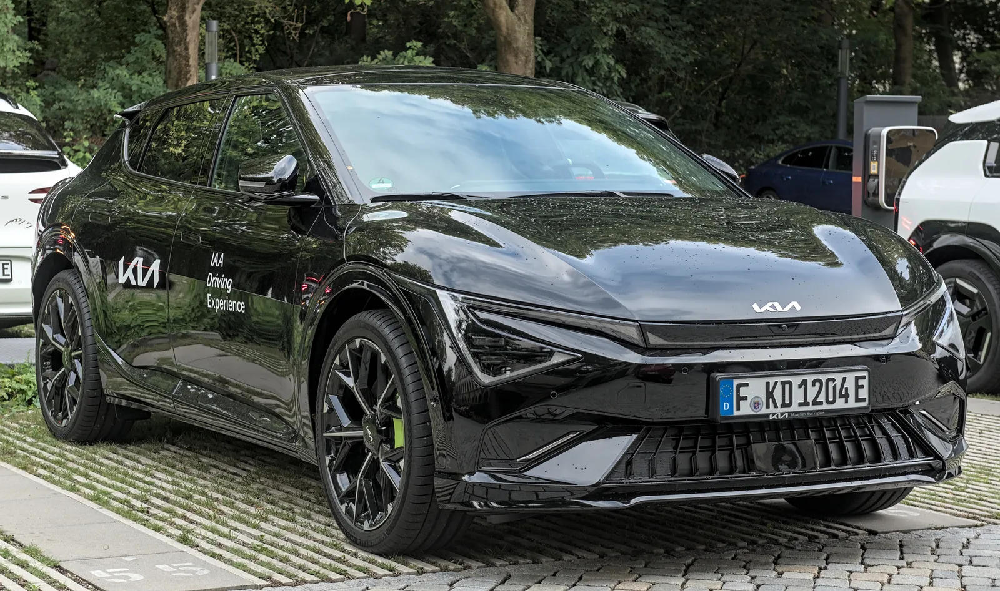

▲ 부분변경(PE) EV6의 고성능 모델 GT가 고전압배터리 결함으로 리콜 대상에 올랐다. 범퍼 하단의 EV6 GT 전용 배지와 레드 브레이크 캘리퍼가 일반 트림과 구분되는 포인트다 ⓒ Kia (Wikimedia Commons, CC BY-SA 4.0)
1. 리콜 배경 — EV6 GT에서도 확인된 배터리 수분 유입
기아가 EV6의 부분변경 모델(PE)의 최상위 고성능 트림 GT에 대해 자발적 리콜을 결정했다. 앞서 현대차·제네시스 전기차 6종에서 확인된 것과 같은 계열의 결함이다. 고전압배터리의 가스배출장치를 통해 수분이 유입되면 배터리 내부 온도 감지에 오류가 생길 수 있고, 이 경우 차량은 안전을 위해 주행 중에도 고전압 회로를 차단한다. 기아는 이로 인해 동력상실이 일어날 가능성이 있다고 밝히며 무상 시정에 나섰다.

▲ EV6 PE GT는 이 부분변경 차체를 기반으로 한 라인업 중 가장 강력한 고성능 모델이다 ⓒ 기아
2. 대상 차량 — 생산일자로 확인하는 리콜 여부
리콜 대상은 2024년 11월 18일부터 2026년 3월 17일 사이 생산된 EV6 PE GT다. 국토교통부 자동차리콜센터 집계 기준 대상 대수는 69대로, 앞서 발표된 현대차·제네시스 6종(9,583대)에 비하면 소규모다. 같은 EV6라도 일반 트림이나 이 기간 밖에서 생산된 차량은 이번 리콜 대상이 아니다. 정확한 대상 여부는 차대번호로 직접 조회하는 것이 가장 확실하다. 자동차리콜센터에서 조회 가능

▲ 2024년 11월~2026년 3월 생산된 EV6 PE GT 69대가 리콜 대상이다 ⓒ 기아

▲ EV6 GT는 GT 전용 대형 휠과 로우스탠스 서스펜션으로 일반 트림과 구분된다 ⓒ Kia (Wikimedia Commons, CC BY-SA 4.0)
3. 조치 방법 — OTA로도 해결 가능
시정 방법은 현대차·제네시스와 동일하게 BMS 소프트웨어 업데이트다. 다만 기아는 EV6 오너들에게 두 가지 선택지를 제공한다. 무선 소프트웨어 업데이트(OTA)로 집이나 주차장에서 원격으로 갱신을 받거나, 서비스센터를 직접 방문해 동일한 업데이트를 받는 방식이다. 두 방법 모두 비용은 전액 무상이며 부품 교체는 필요하지 않다. OTA를 지원하는 차량이라면 굳이 방문 없이도 문제를 해결할 수 있다는 점이 이번 리콜의 특징이다.
4. 왜 GT부터인가 — 고성능 모델의 배터리 부담
EV6 GT는 EV6 라인업 중 가장 강력한 출력을 내는 고성능 모델로, 배터리에 걸리는 부하와 발열량도 일반 트림보다 크다. 배터리 관리 측면에서 온도 감지의 정확성이 더 중요할 수밖에 없는 모델인 셈이다. 업계에서는 고전압배터리 가스배출장치의 수분 유입 문제가 EV6 PE GT뿐 아니라 향후 다른 고성능 전기차 트림으로도 이어질 수 있는지 예의주시하고 있다.

▲ EV6 부분변경 모델의 실내 레이아웃. GT는 전용 스포츠 시트와 메탈 페달이 추가되지만 기본 구조는 동일하다. 계기판에 고전압 시스템 경고가 뜨면 즉시 안전한 곳에 정차해야 한다 ⓒ 기아
5. 소비자 체크리스트
- EV6 PE GT 오너는 국토교통부 자동차리콜센터(car.go.kr)에서 차대번호(VIN)로 조회해 생산일자가 2024년 11월 18일~2026년 3월 17일 사이인지, 실제 리콜 대상 69대에 포함되는지 먼저 확인한다.
- 기아 앱(마이 기아)이나 문자로 OTA 업데이트 안내가 오면 주차 상태에서 업데이트를 진행한다.
- OTA가 어렵다면 가까운 기아 서비스센터를 방문해 무상으로 업데이트받는다.
- 주행 중 고전압 경고등이나 출력 제한이 나타나면 즉시 갓길 등 안전한 곳에 정차한다.